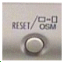
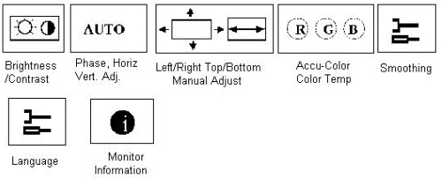

Operating Documentation
Direction 5133330-3, Rev# 14
Signa EXCITE HD 3.0T Service Methods
Module Version 1.0, Version Date 5/3/07
Operating Documentation |
| Required Persons | Preliminary Reqs | Procedure | Finalization |
|---|---|---|---|
| 1 |
To access On Screen Manager OSMTM, press 
Illustration 1: MONITOR ADJUSTMENT ICONS

| NOTE: | To Rotate the OSM Menu Between Landscape and Portrait mode press the OSM button On, then Exit Button, then press OSM button again. |
Select the Select / 1--2 Button on the front of the monitor.
Push either the left and right Control buttons  to initiate
the Auto Adjust of the Phase/ Vertical and Horizontal Centering.
to initiate
the Auto Adjust of the Phase/ Vertical and Horizontal Centering.
| NOTE: | Manual Adjustment of the Position Control and Image Adjust H. Size/Fine controls is rarely needed. Automatic adjustment takes care of this. |
Select the Select / 1--2 Button on the front of the monitor.
From the AccuColor® Control System icon  and use the Control
buttons to select the first entry row under this icon.
and use the Control
buttons to select the first entry row under this icon.
Select: [1 (9300)]. (Monitor Color Temperature) Press the Select / 1--2 Button.
Leave Smoothing setting at Default, Press the Select / 1--2 Button.
Leave Language setting at Default. Press the Select / 1--2 Button.
Leave Display mode setting at Default. Press the Select / 1--2 Button.
Press the Exit Button. All adjustments are now saved. These settings will remain in effect even if power is removed, or system software is re-booted. Unless manually changed by the operator in the OSM , On Screen Manager. The LCD Display Monitor is now ready for integration to Signa.
| NOTE: | For further information, of the OnScreenManager and button identification, refer to the found on the Service CDROM. |
No finalization steps.